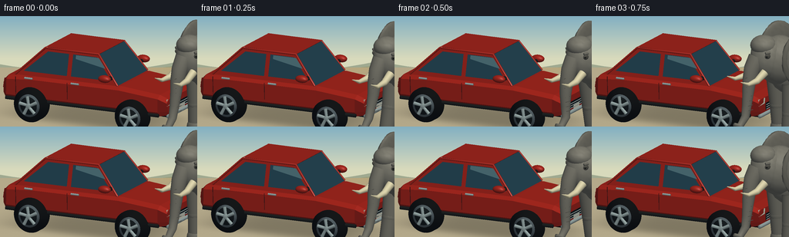
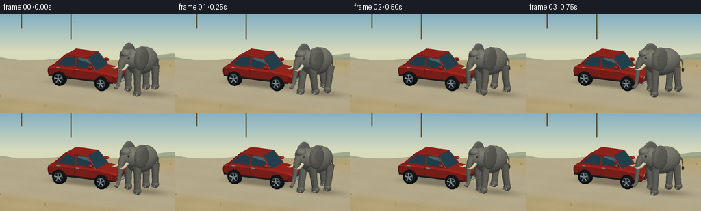
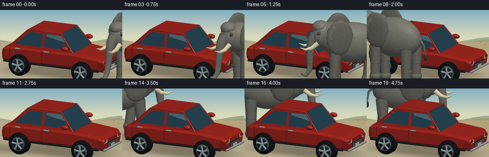
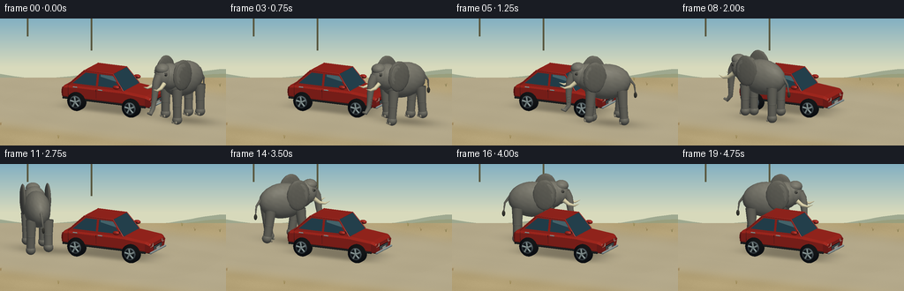

CODING AGENTS AS PIXEL WORLD MODELS
traex/GPT-6.1-Sol · dynamic_spatial_relationship_0068
点击播放 · 原生 RGB 像素
逐轮保存的候选
回放视频、检查图与代码变化。
每份候选均可单独播放。实际图片检查记录在下方工具轨迹中。
候选 01播放与检查图
点击播放 · 原生 RGB 像素


展开代码变化
--- 上一保存版本
+++ 本次保存版本
@@ -0,0 +1,291 @@
+from pathlib import Path
+import json, math
+import numpy as np
+from PIL import Image, ImageDraw, ImageFilter
+import artifact_io
+
+ROOT=Path(__file__).resolve().parent
+SPEC=json.loads((ROOT/'task_spec.json').read_text())
+W,H=SPEC['width'],SPEC['height']; SS=3
+RW,RH=W*SS,H*SS
+# A small, self-contained triangle renderer. All geometry is generated here.
+CAM=np.array([-6.5,5.1,-13.5]); TARGET=np.array([0.,1.15,0.])
+F=(TARGET-CAM); F/=np.linalg.norm(F)
+R=np.cross(F,[0,1,0]); R/=np.linalg.norm(R)
+U=np.cross(R,F)
+SCALE=53.*SS
+LIGHT=np.array([-0.5,0.9,-0.6]); LIGHT/=np.linalg.norm(LIGHT)
+
+def project(v):
+ q=np.asarray(v)-TARGET
+ return np.stack([RW*.5+q@R*SCALE,RH*.52-q@U*SCALE,q@F],-1)
+
+class Mesh:
+ def __init__(self): self.v=[]; self.n=[]; self.c=[]; self.f=[]
+ def add(self,v,n,f,col):
+ k=len(self.v); self.v.extend(v); self.n.extend(n)
+ if np.ndim(col)==1: self.c.extend([col]*len(v))
+ else: self.c.extend(col)
+ self.f.extend(np.asarray(f)+k)
+ def ell(self,center,radii,color,nu=24,nv=14,rot=None,rough=0):
+ v=[]; n=[]; colors=[]
+ for j in range(nv+1):
+ a=math.pi*j/nv
+ for i in range(nu):
+ b=2*math.pi*i/nu
+ unit=np.array([math.sin(a)*math.cos(b),math.cos(a),math.sin(a)*math.sin(b)])
+ ripple=1+rough*(math.sin(b*11+a*17)*.55+math.sin(b*23-a*9)*.45)
+ p=unit*np.array(radii)*ripple
+ normal=unit/np.array(radii); normal/=np.linalg.norm(normal)
+ if rot is not None: p=rot@p; normal=rot@normal
+ v.append(p+center); n.append(normal)
+ grain=1+.018*math.sin(21*b+17*a)+.012*math.cos(37*a-13*b)
+ colors.append(np.array(color)*grain)
+ f=[]
+ for j in range(nv):
+ for i in range(nu):
+ a=j*nu+i; b=j*nu+(i+1)%nu; c=(j+1)*nu+i; d=(j+1)*nu+(i+1)%nu
+ f.extend([[a,c,b],[b,c,d]])
+ self.add(v,n,f,colors)
+ def tube(self,points,radii,color,sides=12):
+ points=np.asarray(points,float); v=[]; n=[]; f=[]
+ for k,p in enumerate(points):
+ t=points[min(k+1,len(points)-1)]-points[max(k-1,0)]; t/=np.linalg.norm(t)
+ ref=np.array([0.,0.,1.]) if abs(t[2])<.85 else np.array([0.,1.,0.])
+ a=np.cross(t,ref); a/=np.linalg.norm(a); b=np.cross(t,a)
+ for i in range(sides):
+ normal=a*math.cos(2*math.pi*i/sides)+b*math.sin(2*math.pi*i/sides)
+ v.append(p+normal*radii[k]); n.append(normal)
+ for k in range(len(points)-1):
+ for i in range(sides):
+ a=k*sides+i;b=k*sides+(i+1)%sides;c=a+sides;d=b+sides
+ f.extend([[a,b,c],[b,d,c]])
+ v.extend([points[0],points[-1]]); n.extend([-t,t]); last=len(v)-1
+ for i in range(sides): f.extend([[last-1,(i+1)%sides,i],[last,(len(points)-1)*sides+i,(len(points)-1)*sides+(i+1)%sides]])
+ self.add(v,n,f,color)
+ def quad(self,points,color,normal=None):
+ v=np.array(points,float)
+ if normal is None:
+ normal=np.cross(v[1]-v[0],v[2]-v[0]); normal/=np.linalg.norm(normal)
+ self.add(v,[normal]*len(v),[[0,1,2],[0,2,3]],color)
+ def transform(self,angle,translation):
+ c,s=math.cos(angle),math.sin(angle)
+ mat=np.array([[c,0,-s],[0,1,0],[s,0,c]])
+ self.v=np.array(self.v)@mat.T+translation; self.n=np.array(self.n)@mat.T
+
+# Warm light, blue ambient sky and subtly reflective highlights.
+def render(mesh,img,depth):
+ vertices=np.array(mesh.v); normal=np.array(mesh.n); colors=np.array(mesh.c)
+ p=project(vertices)
+ lam=np.maximum(normal@LIGHT,0)
+ view=-F
+ halfvec=LIGHT+view; halfvec/=np.linalg.norm(halfvec)
+ spec=np.maximum(normal@halfvec,0)**35
+ # Saturated car paint gets a stronger clear-coat sheen.
+ paint=(colors[:,0]>colors[:,1]*1.55)&(colors[:,0]>100)
+ shaded=colors*(.43+.57*lam[:,None])
+ shaded+=spec[:,None]*(12+65*paint[:,None])
+ shaded+=np.array([2.,4.,7.])*(1-lam[:,None])
+ for tri in mesh.f:
+ ids=np.asarray(tri); a,b,c=p[ids]; area=(b[0]-a[0])*(c[1]-a[1])-(b[1]-a[1])*(c[0]-a[0])
+ if abs(area)<.05: continue
+ xmin=max(0,int(min(a[0],b[0],c[0]))); xmax=min(RW-1,int(max(a[0],b[0],c[0]))+1)
+ ymin=max(0,int(min(a[1],b[1],c[1]))); ymax=min(RH-1,int(max(a[1],b[1],c[1]))+1)
+ if xmin>xmax or ymin>ymax: continue
+ yy,xx=np.mgrid[ymin:ymax+1,xmin:xmax+1];xx=xx+.5;yy=yy+.5
+ wb=((xx-a[0])*(c[1]-a[1])-(yy-a[1])*(c[0]-a[0]))/area
+ wc=((b[0]-a[0])*(yy-a[1])-(b[1]-a[1])*(xx-a[0]))/area
+ wa=1-wb-wc; z=wa*a[2]+wb*b[2]+wc*c[2]
+ dep=depth[ymin:ymax+1,xmin:xmax+1]
+ mask=(wa>=-.0001)&(wb>=-.0001)&(wc>=-.0001)&(z<dep)
+ if not mask.any():continue
+ rgb=wa[...,None]*shaded[ids[0]]+wb[...,None]*shaded[ids[1]]+wc[...,None]*shaded[ids[2]]
+ img[ymin:ymax+1,xmin:xmax+1][mask]=rgb[mask]; dep[mask]=z[mask]
+ return img
+
+RED=(163,39,30); DARK=(19,26,28); GLASS=(42,76,89); TRIM=(32,35,35); CHROME=(155,171,169)
+
+def car():
+ m=Mesh()
+ # Rounded perimeter sections forming a solid sculpted chassis.
+ sections=[(-2.24,.72,.91,.81),(-2.05,.93,1.03,.94),(-1.0,.96,1.14,.96),(1.35,.96,1.14,.96),(2.08,.91,1.07,.89),(2.22,.75,.94,.76)]
+ v=[]
+ for x,wb,yt,wt in sections:
+ v.extend([[x,.49,-wb*.88],[x,.61,-wb],[x,yt-.08,-wt],[x,yt,-wt*.84],[x,yt,wt*.84],[x,yt-.08,wt],[x,.61,wb],[x,.49,wb*.88]])
+ for j in range(len(sections)-1):
+ for k in range(8):
+ ids=[j*8+k,j*8+(k+1)%8,(j+1)*8+(k+1)%8,(j+1)*8+k]
+ m.quad([v[i] for i in ids],RED)
+ for j in [0,len(sections)-1]:
+ vv=v[j*8:(j+1)*8]
+ for k in range(1,7):m.add([vv[0],vv[k],vv[k+1]],[[-1 if j==0 else 1,0,0]]*3,[[0,1,2]],RED)
+ # Roof and cabin.
+ m.quad([[-.94,1.12,-.83],[-.36,1.85,-.7],[-.36,1.85,.7],[-.94,1.12,.83]],GLASS,[-.75,.5,0])
+ m.quad([[-.38,1.87,-.72],[1.09,1.88,-.72],[1.09,1.88,.72],[-.38,1.87,.72]],RED,[0,1,0])
+ m.quad([[1.08,1.85,-.7],[1.83,1.14,-.85],[1.83,1.14,.85],[1.08,1.85,.7]],GLASS,[.7,.7,0])
+ for z in [-1,1]:
+ m.quad([[-.92,1.13,z*.835],[-.34,1.85,z*.71],[1.08,1.85,z*.71],[1.83,1.13,z*.865]],RED,[0,.2,z])
+ m.quad([[-.75,1.24,z*.838],[-.30,1.77,z*.728],[.34,1.77,z*.728],[.34,1.24,z*.859]],GLASS,[0,.15,z])
+ m.quad([[.45,1.24,z*.861],[.45,1.77,z*.732],[1.02,1.77,z*.732],[1.62,1.24,z*.86]],GLASS,[0,.15,z])
+ # Sky reflections in side glass.
+ m.quad([[-.57,1.52,z*.79],[-.36,1.76,z*.734],[.26,1.76,z*.735],[.26,1.67,z*.755]],(87,124,132),[0,.15,z])
+ m.tube([[-.92,1.14,z*.85],[-.35,1.85,z*.72],[1.1,1.85,z*.72],[1.84,1.14,z*.88]],[.027]*4,RED,8)
+ for x in [.39,1.79]:m.tube([[x,.58,z*.947],[x,1.10,z*.975]],[.009,.009],(83,29,27),6)
+ for x in [.17,1.43]: m.tube([[x-.1,1.095,z*.982],[x+.11,1.095,z*.982]],[.026,.026],CHROME,8)
+ m.tube([[-.73,1.31,z*.82],[-.68,1.32,z*1.06]],[.055,.04],TRIM)
+ m.ell([-.69,1.35,z*1.1],[.17,.095,.11],RED,16,10)
+ m.tube([[-2.07,.53,z*.92],[2.08,.53,z*.92]],[.045,.045],TRIM)
+ for x in [-1.38,1.36]:
+ # Tire surface and outward alloy wheel faces.
+ centerz=z*.945
+ points=[[x,.44,centerz-.155],[x,.44,centerz-.115],[x,.44,centerz+.115],[x,.44,centerz+.155]]
+ m.tube(points,[.365,.433,.433,.365],(23,25,26),40)
+ outz=z*1.11
+ m.tube([[x,.44,outz-z*.01],[x,.44,outz+z*.014]],[.285,.285],(91,103,107),32)
+ m.tube([[x,.44,outz+z*.019],[x,.44,outz+z*.026]],[.225,.225],(27,33,35),32)
+ for a in np.linspace(0,2*math.pi,5,endpoint=False):
+ m.tube([[x+.055*math.sin(a),.44+.055*math.cos(a),outz+z*.03],[x+.243*math.sin(a+.12),.44+.243*math.cos(a+.12),outz+z*.03]],[.038,.045],CHROME,8)
+ m.ell([x,.44,outz+z*.04],[.075,.075,.026],CHROME,16,10)
+ # Nose: white lamps, grille and chromed bumper.
+ for z in [-1,1]:
+ m.quad([[-2.245,.76,z*.46],[-2.245,.9,z*.44],[-2.22,.92,z*.78],[-2.24,.75,z*.79]],(226,233,209),[-1,0,0])
+ m.quad([[2.218,.74,z*.5],[2.218,.93,z*.5],[2.18,.98,z*.79],[2.218,.74,z*.79]],(208,29,24),[1,0,0])
+ m.quad([[-2.251,.58,-.43],[-2.251,.76,-.43],[-2.251,.76,.43],[-2.251,.58,.43]],DARK,[-1,0,0])
+ for y in [.6,.655,.71]:m.tube([[-2.26,y,-.40],[-2.26,y,.40]],[.01,.01],CHROME,6)
+ m.tube([[-2.255,.5,-.78],[-2.255,.5,.78]],[.047,.047],CHROME)
+ m.quad([[-2.265,.54,-.17],[-2.265,.67,-.17],[-2.265,.67,.17],[-2.265,.54,.17]],(222,218,196),[-1,0,0])
+ return m
+
+GRAY=np.array([127,125,113.])
+def elephant(t,angle,pos):
+ m=Mesh(); gait=2*math.pi*t*1.25; bob=.025*math.cos(2*gait)
+ m.ell([-.12,1.92+bob,0],[1.13,.81,.59],GRAY,32,20,rough=.013)
+ m.ell([.71,2.15+bob,0],[.56,.62,.53],GRAY*.99,28,18,rough=.008)
+ # Far and near sturdy legs, articulated rather than sliding feet.
+ for z in [-.39,.39]:
+ for x in [-.83,.58]:
+ phase=gait+(0 if (x<0)==(z<0) else math.pi)
+ swing=.25*math.sin(phase); lift=.16*max(0,math.cos(phase))
+ hip=np.array([x,1.58+bob,z]); knee=np.array([x+swing*.45,.88+lift*.4,z]); foot=np.array([x+swing,.20+lift,z])
+ m.tube([hip,knee,foot],[.245,.20,.19],GRAY*.90,18)
+ m.ell(knee,[.206,.23,.205],GRAY*.91,18,12,rough=.009)
+ m.ell(foot,[.23,.22,.225],GRAY*.92,20,12)
+ for zz in [-.12,0,.12]:m.ell(foot+np.array([.18,-.09,zz]),[.048,.07,.045],(163,156,134),12,8)
+ # Large African elephant ears, with rippled scalloped outer surfaces.
+ for side in [-1,1]:
+ a=.10*math.sin(gait+.6)
+ rot=np.array([[math.cos(a),0,-math.sin(a)],[0,1,0],[math.sin(a),0,math.cos(a)]])
+ m.ell([.42,2.27+bob,side*.57],[.53,.70,.12],GRAY*.86,30,18,rot,rough=.028)
+ m.ell([.47,2.30+bob,side*.635],[.39,.52,.044],GRAY*.97,24,16,rot,rough=.016)
+ m.ell([1.04,2.25+bob,0],[.44,.54,.40],GRAY*1.02,28,18,rough=.009)
+ m.ell([1.15,2.58+bob,0],[.33,.25,.33],GRAY,24,14)
+ for z in [-.346,.346]:
+ m.ell([1.23,2.38+bob,z],[.082,.066,.038],GRAY*.67,16,10)
+ m.ell([1.262,2.382+bob,z*1.045],[.037,.033,.022],(20,23,21),16,10)
+ m.ell([1.273,2.395+bob,z*1.09],[.009,.008,.006],(235,231,212),10,8)
+ m.tube([[1.17,2.47+bob,z],[1.29,2.465+bob,z]],[.037,.035],GRAY*.91,10)
+ # Curving tusks, thick at the root and ivory tips.
+ for side in [-1,1]:
+ m.tube([[1.27,1.97+bob,side*.28],[1.51,1.78+bob,side*.30],[1.77,1.73+bob,side*.33],[1.99,1.82+bob,side*.34]],[.102,.082,.049,.008],(222,213,173),16)
+ sway=.10*math.sin(gait+.4)
+ pts=[[1.33,2.29+bob,0],[1.48,2.02+bob,0],[1.54,1.74+bob,.02],[1.57,1.44+bob,.03],[1.6+sway*.4,1.13,.04],[1.64+sway,.83,.04],[1.81+sway,.61,.02],[1.97+sway,.68,.01]]
+ m.tube(pts,[.22,.20,.17,.145,.12,.105,.086,.049],GRAY*.94,20)
+ # Fine transverse trunk creases.
+ for k in range(8):
+ y=1.03+k*.12; x=1.6+(1.7-y)*-.10
+ m.tube([[x-.025,y,-.11],[x+.09,y-.025,-.07]],[.008,.008],GRAY*.72,6)
+ tail_swing=.07*math.sin(gait)
+ m.tube([[-1.16,2.06+bob,0],[-1.41,1.76,tail_swing],[-1.46,1.34,tail_swing+.05]],[.075,.045,.023],GRAY*.89,12)
+ m.ell([-1.46,1.28,tail_swing+.05],[.075,.14,.063],(64,63,54),14,10)
+ m.transform(angle,pos)
+ return m
+
+# Static high-resolution background: open savannah and a quiet turnout.
+def background():
+ yy,xx=np.mgrid[0:RH,0:RW]
+ horizon=int(RH*.38)
+ a=np.clip(yy/horizon,0,1)[...,None]
+ sky=np.array([131,176,194])*(1-a)+np.array([216,218,188])*a
+ im=np.broadcast_to(sky,(RH,RW,3)).copy()
+ rng=np.random.default_rng(18)
+ pil=Image.fromarray(np.uint8(im));d=ImageDraw.Draw(pil)
+ # Remote ridges in atmospheric colors.
+ for level,col in [(0,(159,169,144)),(1,(153,159,125))]:
+ pts=[(0,horizon+18*SS)]
+ for x in range(0,RW+1,8*SS):
+ y=horizon+(8+level*7+4*math.sin(x/(67*SS)+level)+3*math.sin(x/(23*SS)))*SS
+ pts.append((x,y))
+ pts.extend([(RW,RH),(0,RH)])
+ d.polygon(pts,fill=col)
+ im=np.array(pil,float)
+ # Orthographic ground coordinates, solve each camera ray at ground y=0.
+ qx=(xx-RW*.5)/SCALE; qy=-(yy-RH*.52)/SCALE
+ origins=TARGET+qx[...,None]*R+qy[...,None]*U
+ lam=-origins[...,1]/F[1]
+ world=origins+lam[...,None]*F
+ gx,gz=world[...,0],world[...,2]
+ ground=yy>horizon+12*SS
+ noise=rng.normal(0,1.4,(RH,RW))
+ soil=np.zeros_like(im); soil[:]=[180,162,119]
+ soil+=noise[...,None]
+ soil+=(2*np.sin(gx*1.9)+2*np.sin(gz*2.7))[...,None]
+ # Broad compacted dirt road, no lane markings.
+ road=np.exp(-((gz+.0)/4.8)**8)
+ soil=soil*(1-road[...,None]*.64)+np.array([180,173,150])*road[...,None]*.64
+ im[ground]=soil[ground]
+ pil=Image.fromarray(np.uint8(np.clip(im,0,255)));d=ImageDraw.Draw(pil)
+ # Acacias kept at the distant edges of the shot.
+ def tree(x,z,h):
+ p=project([[x,0,z],[x,h*.76,z],[x,h,z]])
+ d.line([tuple(p[0,:2]),tuple(p[1,:2])],fill=(89,88,64),width=max(1,int(2*SS)))
+ px,py=p[2,:2]
+ for j in range(6):
+ cx=px+(j-2.5)*h*SCALE*.14; cy=py+abs(j-2.5)*SS*.7
+ rad=h*SCALE*.24
+ d.ellipse((cx-rad,cy-rad*.2,cx+rad,cy+rad*.28),fill=(101+j*2,115+j*2,77+j))
+ for side in [-1,1]:d.line([tuple(p[1,:2]),(px+side*h*SCALE*.42,py+4*SS)],fill=(89,88,64),width=SS)
+ tree(-5.5,8.,1.8);tree(5.4,9.,2.1);tree(9.1,10.,1.35)
+ # Sparse grass and pebbles along the margins, not in the walking path.
+ for k in range(160):
+ x=rng.uniform(-14,14);z=rng.choice([-1,1])*rng.uniform(4.7,12)
+ p=project([[x,0,z]])[0]; px,py=p[:2]
+ if 0<px<RW and horizon+12*SS<py<RH:
+ col=(int(rng.integers(111,150)),int(rng.integers(118,145)),76)
+ for s in [-1,0,1]:d.line([(px,py),(px+s*SS,py-rng.uniform(2,4)*SS)],fill=col,width=1)
+ return np.array(pil,float),world
+
+BG,WORLD=background()
+CAR=car()
+def shadows(img,pos):
+ gx,gz=WORLD[...,0],WORLD[...,2]
+ # Smooth contact shadows anchor both subjects to the road.
+ shade=np.exp(-((gx-.15)/2.05)**4-((gz-.18)/.95)**4)*.29
+ dx=gx-pos[0]+.25;dz=gz-pos[2]-.15
+ shade+=.25*np.exp(-(dx/1.35)**2-(dz/.72)**2)
+ return img*(1-np.clip(shade,0,.49)[...,None])
+
+frames=[]
+for i in range(SPEC['frames']):
+ progress=i/(SPEC['frames']-1)
+ # Pauses at the front and rear make the relationship change legible.
+ u=np.clip((progress-.055)/.875,0,1)
+ smooth=u*u*(3-2*u)
+ a=math.pi+.22+(math.pi+.81)*smooth
+ pos=np.array([3.72*math.cos(a),0,2.08*math.sin(a)])
+ tangent=np.array([-3.72*math.sin(a),0,2.08*math.cos(a)])
+ angle=math.atan2(tangent[2],tangent[0])
+ img=shadows(BG.copy(),pos); depth=np.full((RH,RW),np.inf)
+ render(CAR,img,depth)
+ render(elephant(i/SPEC['fps'],angle,pos),img,depth)
+ out=Image.fromarray(np.uint8(np.clip(img,0,255))).resize((W,H),Image.Resampling.LANCZOS)
+ frames.append(np.array(out))
+ print(f'Frame {i+1}/{SPEC["frames"]}',flush=True)
+frames=np.array(frames,dtype=np.uint8)
+artifact_io.save(frames,ROOT)
+# Also provide a conventional RGB video for easy viewing.
+try:
+ import imageio.v2 as imageio
+ imageio.mimwrite(ROOT/'video.mp4',frames,fps=SPEC['fps'],codec='libx264',quality=8,macro_block_size=1)
+except Exception as e:
+ print('MP4 encoding unavailable:',e)
+print('Saved all required artifacts.')
候选 02播放与检查图
点击播放 · 原生 RGB 像素


展开代码变化
--- 上一保存版本 +++ 本次保存版本 @@ -13,7 +13,7 @@ F=(TARGET-CAM); F/=np.linalg.norm(F) R=np.cross(F,[0,1,0]); R/=np.linalg.norm(R) U=np.cross(R,F) -SCALE=53.*SS +SCALE=25.*SS LIGHT=np.array([-0.5,0.9,-0.6]); LIGHT/=np.linalg.norm(LIGHT) def project(v):
候选 03播放与检查图
点击播放 · 原生 RGB 像素

展开代码变化
--- 上一保存版本
+++ 本次保存版本
@@ -244,7 +244,13 @@
rad=h*SCALE*.24
d.ellipse((cx-rad,cy-rad*.2,cx+rad,cy+rad*.28),fill=(101+j*2,115+j*2,77+j))
for side in [-1,1]:d.line([tuple(p[1,:2]),(px+side*h*SCALE*.42,py+4*SS)],fill=(89,88,64),width=SS)
- tree(-5.5,8.,1.8);tree(5.4,9.,2.1);tree(9.1,10.,1.35)
+ # Distant flat-topped acacias, silhouetted above the ridge.
+ for tx,ty,sz in [(22,51,8),(237,54,7)]:
+ tx*=SS;ty*=SS;sz*=SS
+ d.line([(tx,ty+sz),(tx,ty-sz*.1)],fill=(107,113,79),width=SS)
+ for side in [-1,1]:
+ d.line([(tx,ty+sz*.3),(tx+side*sz*.7,ty-sz*.22)],fill=(107,113,79),width=SS)
+ d.ellipse((tx-sz,ty-sz*.45,tx+sz,ty+sz*.02),fill=(115,129,87))
# Sparse grass and pebbles along the margins, not in the walking path.
for k in range(160):
x=rng.uniform(-14,14);z=rng.choice([-1,1])*rng.uniform(4.7,12)
@@ -270,7 +276,7 @@
# Pauses at the front and rear make the relationship change legible.
u=np.clip((progress-.055)/.875,0,1)
smooth=u*u*(3-2*u)
- a=math.pi+.22+(math.pi+.81)*smooth
+ a=math.pi+.22+(math.pi-.44)*smooth
pos=np.array([3.72*math.cos(a),0,2.08*math.sin(a)])
tangent=np.array([-3.72*math.sin(a),0,2.08*math.cos(a)])
angle=math.atan2(tangent[2],tangent[0])
候选 04播放与检查图
可观测工具轨迹
实际执行的命令与返回图片。
命令 1exit 0
/bin/bash -lc "ls -la && cat prompt.txt && printf '\\n---RULES---\\n' && cat GENERATION_RULES.md && printf '\\n---SPEC---\\n' && cat task_spec.json"
命令 2exit 0
/bin/bash -lc "cat artifact_io.py && python - <<'PY' import importlib.util for p in ['numpy','PIL','imageio','imageio_ffmpeg']: print(p, bool(importlib.util.find_spec(p))) PY"
命令 3exit 0
/bin/bash -lc "cat > generate.py <<'PY'
from pathlib import Path
import json, math
import numpy as np
from PIL import Image, ImageDraw, ImageFilter
import artifact_io
ROOT=Path(__file__).resolve().parent
SPEC=json.loads((ROOT/'task_spec.json').read_text())
W,H=SPEC['width'],SPEC['height']; SS=3
RW,RH=W*SS,H*SS
# A small, self-contained triangle renderer. All geometry is generated here.
CAM=np.array([-6.5,5.1,-13.5]); TARGET=np.array([0.,1.15,0.])
F=(TARGET-CAM); F/=np.linalg.norm(F)
R=np.cross(F,[0,1,0]); R/=np.linalg.norm(R)
U=np.cross(R,F)
SCALE=53.*SS
LIGHT=np.array([-0.5,0.9,-0.6]); LIGHT/=np.linalg.norm(LIGHT)
def project(v):
q=np.asarray(v)-TARGET
return np.stack([RW*.5+q@R*SCALE,RH*.52-q@U*SCALE,q@F],-1)
class Mesh:
def __init__(self): self.v=[]; self.n=[]; self.c=[]; self.f=[]
def add(self,v,n,f,col):
k=len(self.v); self.v.extend(v); self.n.extend(n)
if np.ndim(col)==1: self.c.extend([col]*len(v))
else: self.c.extend(col)
self.f.extend(np.asarray(f)+k)
def ell(self,center,radii,color,nu=24,nv=14,rot=None,rough=0):
v=[]; n=[]; colors=[]
for j in range(nv+1):
a=math.pi*j/nv
for i in range(nu):
b=2*math.pi*i/nu
unit=np.array([math.sin(a)*math.cos(b),math.cos(a),math.sin(a)*math.sin(b)])
ripple=1+rough*(math.sin(b*11+a*17)*.55+math.sin(b*23-a*9)*.45)
p=unit*np.array(radii)*ripple
normal=unit/np.array(radii); normal/=np.linalg.norm(normal)
if rot is not None: p=rot@p; normal=rot@normal
v.append(p+center); n.append(normal)
grain=1+.018*math.sin(21*b+17*a)+.012*math.cos(37*a-13*b)
colors.append(np.array(color)*grain)
f=[]
for j in range(nv):
for i in range(nu):
a=j*nu+i; b=j*nu+(i+1)%nu; c=(j+1)*nu+i; d=(j+1)*nu+(i+1)%nu
f.extend([[a,c,b],[b,c,d]])
self.add(v,n,f,colors)
def tube(self,points,radii,color,sides=12):
points=np.asarray(points,float); v=[]; n=[]; f=[]
for k,p in enumerate(points):
t=points[min(k+1,len(points)-1)]-points[max(k-1,0)]; t/=np.linalg.norm(t)
ref=np.array([0.,0.,1.]) if abs(t[2])<.85 else np.array([0.,1.,0.])
a=np.cross(t,ref); a/=np.linalg.norm(a); b=np.cross(t,a)
for i in range(sides):
normal=a*math.cos(2*math.pi*i/sides)+b*math.sin(2*math.pi*i/sides)
v.append(p+normal*radii[k]); n.append(normal)
for k in range(len(points)-1):
for i in range(sides):
a=k*sides+i;b=k*sides+(i+1)%sides;c=a+sides;d=b+sides
f.extend([[a,b,c],[b,d,c]])
v.extend([points[0],points[-1]]); n.extend([-t,t]); last=len(v)-1
for i in range(sides): f.extend([[last-1,(i+1)%sides,i],[last,(len(points)-1)*sides+i,(len(points)-1)*sides+(i+1)%sides]])
self.add(v,n,f,color)
def quad(self,points,color,normal=None):
v=np.array(points,float)
if normal is None:
normal=np.cross(v[1]-v[0],v[2]-v[0]); normal/=np.linalg.norm(normal)
self.add(v,[normal]*len(v),[[0,1,2],[0,2,3]],color)
def transform(self,angle,translation):
c,s=math.cos(angle),math.sin(angle)
mat=np.array([[c,0,-s],[0,1,0],[s,0,c]])
self.v=np.array(self.v)@mat.T+translation; self.n=np.array(self.n)@mat.T
# Warm light, blue ambient sky and subtly reflective highlights.
def render(mesh,img,depth):
vertices=np.array(mesh.v); normal=np.array(mesh.n); colors=np.array(mesh.c)
p=project(vertices)
lam=np.maximum(normal@LIGHT,0)
view=-F
halfvec=LIGHT+view; halfvec/=np.linalg.norm(halfvec)
spec=np.maximum(normal@halfvec,0)**35
# Saturated car paint gets a stronger clear-coat sheen.
paint=(colors[:,0]>colors[:,1]*1.55)&(colors[:,0]>100)
shaded=colors*(.43+.57*lam[:,None])
shaded+=spec[:,None]*(12+65*paint[:,None])
shaded+=np.array([2.,4.,7.])*(1-lam[:,None])
for tri in mesh.f:
ids=np.asarray(tri); a,b,c=p[ids]; area=(b[0]-a[0])*(c[1]-a[1])-(b[1]-a[1])*(c[0]-a[0])
if abs(area)<.05: continue
xmin=max(0,int(min(a[0],b[0],c[0]))); xmax=min(RW-1,int(max(a[0],b[0],c[0]))+1)
ymin=max(0,int(min(a[1],b[1],c[1]))); ymax=min(RH-1,int(max(a[1],b[1],c[1]))+1)
if xmin>xmax or ymin>ymax: continue
yy,xx=np.mgrid[ymin:ymax+1,xmin:xmax+1];xx=xx+.5;yy=yy+.5
wb=((xx-a[0])*(c[1]-a[1])-(yy-a[1])*(c[0]-a[0]))/area
wc=((b[0]-a[0])*(yy-a[1])-(b[1]-a[1])*(xx-a[0]))/area
wa=1-wb-wc; z=wa*a[2]+wb*b[2]+wc*c[2]
dep=depth[ymin:ymax+1,xmin:xmax+1]
mask=(wa>=-.0001)&(wb>=-.0001)&(wc>=-.0001)&(z<dep)
if not mask.any():continue
rgb=wa[...,None]*shaded[ids[0]]+wb[...,None]*shaded[ids[1]]+wc[...,None]*shaded[ids[2]]
img[ymin:ymax+1,xmin:xmax+1][mask]=rgb[mask]; dep[mask]=z[mask]
return img
RED=(163,39,30); DARK=(19,26,28); GLASS=(42,76,89); TRIM=(32,35,35); CHROME=(155,171,169)
def car():
m=Mesh()
# Rounded perimeter sections forming a solid sculpted chassis.
sections=[(-2.24,.72,.91,.81),(-2.05,.93,1.03,.94),(-1.0,.96,1.14,.96),(1.35,.96,1.14,.96),(2.08,.91,1.07,.89),(2.22,.75,.94,.76)]
v=[]
for x,wb,yt,wt in sections:
v.extend([[x,.49,-wb*.88],[x,.61,-wb],[x,yt-.08,-wt],[x,yt,-wt*.84],[x,yt,wt*.84],[x,yt-.08,wt],[x,.61,wb],[x,.49,wb*.88]])
for j in range(len(sections)-1):
for k in range(8):
ids=[j*8+k,j*8+(k+1)%8,(j+1)*8+(k+1)%8,(j+1)*8+k]
m.quad([v[i] for i in ids],RED)
for j in [0,len(sections)-1]:
vv=v[j*8:(j+1)*8]
for k in range(1,7):m.add([vv[0],vv[k],vv[k+1]],[[-1 if j==0 else 1,0,0]]*3,[[0,1,2]],RED)
# Roof and cabin.
m.quad([[-.94,1.12,-.83],[-.36,1.85,-.7],[-.36,1.85,.7],[-.94,1.12,.83]],GLASS,[-.75,.5,0])
m.quad([[-.38,1.87,-.72],[1.09,1.88,-.72],[1.09,1.88,.72],[-.38,1.87,.72]],RED,[0,1,0])
m.quad([[1.08,1.85,-.7],[1.83,1.14,-.85],[1.83,1.14,.85],[1.08,1.85,.7]],GLASS,[.7,.7,0])
for z in [-1,1]:
m.quad([[-.92,1.13,z*.835],[-.34,1.85,z*.71],[1.08,1.85,z*.71],[1.83,1.13,z*.865]],RED,[0,.2,z])
m.quad([[-.75,1.24,z*.838],[-.30,1.77,z*.728],[.34,1.77,z*.728],[.34,1.24,z*.859]],GLASS,[0,.15,z])
m.quad([[.45,1.24,z*.861],[.45,1.77,z*.732],[1.02,1.77,z*.732],[1.62,1.24,z*.86]],GLASS,[0,.15,z])
# Sky reflections in side glass.
m.quad([[-.57,1.52,z*.79],[-.36,1.76,z*.734],[.26,1.76,z*.735],[.26,1.67,z*.755]],(87,124,132),[0,.15,z])
m.tube([[-.92,1.14,z*.85],[-.35,1.85,z*.72],[1.1,1.85,z*.72],[1.84,1.14,z*.88]],[.027]*4,RED,8)
for x in [.39,1.79]:m.tube([[x,.58,z*.947],[x,1.10,z*.975]],[.009,.009],(83,29,27),6)
for x in [.17,1.43]: m.tube([[x-.1,1.095,z*.982],[x+.11,1.095,z*.982]],[.026,.026],CHROME,8)
m.tube([[-.73,1.31,z*.82],[-.68,1.32,z*1.06]],[.055,.04],TRIM)
m.ell([-.69,1.35,z*1.1],[.17,.095,.11],RED,16,10)
m.tube([[-2.07,.53,z*.92],[2.08,.53,z*.92]],[.045,.045],TRIM)
for x in [-1.38,1.36]:
# Tire surface and outward alloy wheel faces.
centerz=z*.945
points=[[x,.44,centerz-.155],[x,.44,centerz-.115],[x,.44,centerz+.115],[x,.44,centerz+.155]]
m.tube(points,[.365,.433,.433,.365],(23,25,26),40)
outz=z*1.11
m.tube([[x,.44,outz-z*.01],[x,.44,outz+z*.014]],[.285,.285],(91,103,107),32)
m.tube([[x,.44,outz+z*.019],[x,.44,outz+z*.026]],[.225,.225],(27,33,35),32)
for a in np.linspace(0,2*math.pi,5,endpoint=False):
m.tube([[x+.055*math.sin(a),.44+.055*math.cos(a),outz+z*.03],[x+.243*math.sin(a+.12),.44+.243*math.cos(a+.12),outz+z*.03]],[.038,.045],CHROME,8)
m.ell([x,.44,outz+z*.04],[.075,.075,.026],CHROME,16,10)
# Nose: white lamps, grille and chromed bumper.
for z in [-1,1]:
m.quad([[-2.245,.76,z*.46],[-2.245,.9,z*.44],[-2.22,.92,z*.78],[-2.24,.75,z*.79]],(226,233,209),[-1,0,0])
m.quad([[2.218,.74,z*.5],[2.218,.93,z*.5],[2.18,.98,z*.79],[2.218,.74,z*.79]],(208,29,24),[1,0,0])
m.quad([[-2.251,.58,-.43],[-2.251,.76,-.43],[-2.251,.76,.43],[-2.251,.58,.43]],DARK,[-1,0,0])
for y in [.6,.655,.71]:m.tube([[-2.26,y,-.40],[-2.26,y,.40]],[.01,.01],CHROME,6)
m.tube([[-2.255,.5,-.78],[-2.255,.5,.78]],[.047,.047],CHROME)
m.quad([[-2.265,.54,-.17],[-2.265,.67,-.17],[-2.265,.67,.17],[-2.265,.54,.17]],(222,218,196),[-1,0,0])
return m
GRAY=np.array([127,125,113.])
def elephant(t,angle,pos):
m=Mesh(); gait=2*math.pi*t*1.25; bob=.025*math.cos(2*gait)
m.ell([-.12,1.92+bob,0],[1.13,.81,.59],GRAY,32,20,rough=.013)
m.ell([.71,2.15+bob,0],[.56,.62,.53],GRAY*.99,28,18,rough=.008)
# Far and near sturdy legs, articulated rather than sliding feet.
for z in [-.39,.39]:
for x in [-.83,.58]:
phase=gait+(0 if (x<0)==(z<0) else math.pi)
swing=.25*math.sin(phase); lift=.16*max(0,math.cos(phase))
hip=np.array([x,1.58+bob,z]); knee=np.array([x+swing*.45,.88+lift*.4,z]); foot=np.array([x+swing,.20+lift,z])
m.tube([hip,knee,foot],[.245,.20,.19],GRAY*.90,18)
m.ell(knee,[.206,.23,.205],GRAY*.91,18,12,rough=.009)
m.ell(foot,[.23,.22,.225],GRAY*.92,20,12)
for zz in [-.12,0,.12]:m.ell(foot+np.array([.18,-.09,zz]),[.048,.07,.045],(163,156,134),12,8)
# Large African elephant ears, with rippled scalloped outer surfaces.
for side in [-1,1]:
a=.10*math.sin(gait+.6)
rot=np.array([[math.cos(a),0,-math.sin(a)],[0,1,0],[math.sin(a),0,math.cos(a)]])
m.ell([.42,2.27+bob,side*.57],[.53,.70,.12],GRAY*.86,30,18,rot,rough=.028)
m.ell([.47,2.30+bob,side*.635],[.39,.52,.044],GRAY*.97,24,16,rot,rough=.016)
m.ell([1.04,2.25+bob,0],[.44,.54,.40],GRAY*1.02,28,18,rough=.009)
m.ell([1.15,2.58+bob,0],[.33,.25,.33],GRAY,24,14)
for z in [-.346,.346]:
m.ell([1.23,2.38+bob,z],[.082,.066,.038],GRAY*.67,16,10)
m.ell([1.262,2.382+bob,z*1.045],[.037,.033,.022],(20,23,21),16,10)
m.ell([1.273,2.395+bob,z*1.09],[.009,.008,.006],(235,231,212),10,8)
m.tube([[1.17,2.47+bob,z],[1.29,2.465+bob,z]],[.037,.035],GRAY*.91,10)
# Curving tusks, thick at the root and ivory tips.
for side in [-1,1]:
m.tube([[1.27,1.97+bob,side*.28],[1.51,1.78+bob,side*.30],[1.77,1.73+bob,side*.33],[1.99,1.82+bob,side*.34]],[.102,.082,.049,.008],(222,213,173),16)
sway=.10*math.sin(gait+.4)
pts=[[1.33,2.29+bob,0],[1.48,2.02+bob,0],[1.54,1.74+bob,.02],[1.57,1.44+bob,.03],[1.6+sway*.4,1.13,.04],[1.64+sway,.83,.04],[1.81+sway,.61,.02],[1.97+sway,.68,.01]]
m.tube(pts,[.22,.20,.17,.145,.12,.105,.086,.049],GRAY*.94,20)
# Fine transverse trunk creases.
for k in range(8):
y=1.03+k*.12; x=1.6+(1.7-y)*-.10
m.tube([[x-.025,y,-.11],[x+.09,y-.025,-.07]],[.008,.008],GRAY*.72,6)
tail_swing=.07*math.sin(gait)
m.tube([[-1.16,2.06+bob,0],[-1.41,1.76,tail_swing],[-1.46,1.34,tail_swing+.05]],[.075,.045,.023],GRAY*.89,12)
m.ell([-1.46,1.28,tail_swing+.05],[.075,.14,.063],(64,63,54),14,10)
m.transform(angle,pos)
return m
# Static high-resolution background: open savannah and a quiet turnout.
def background():
yy,xx=np.mgrid[0:RH,0:RW]
horizon=int(RH*.38)
a=np.clip(yy/horizon,0,1)[...,None]
sky=np.array([131,176,194])*(1-a)+np.array([216,218,188])*a
im=np.broadcast_to(sky,(RH,RW,3)).copy()
rng=np.random.default_rng(18)
pil=Image.fromarray(np.uint8(im));d=ImageDraw.Draw(pil)
# Remote ridges in atmospheric colors.
for level,col in [(0,(159,169,144)),(1,(153,159,125))]:
pts=[(0,horizon+18*SS)]
for x in range(0,RW+1,8*SS):
y=horizon+(8+level*7+4*math.sin(x/(67*SS)+level)+3*math.sin(x/(23*SS)))*SS
pts.append((x,y))
pts.extend([(RW,RH),(0,RH)])
d.polygon(pts,fill=col)
im=np.array(pil,float)
# Orthographic ground coordinates, solve each camera ray at ground y=0.
qx=(xx-RW*.5)/SCALE; qy=-(yy-RH*.52)/SCALE
origins=TARGET+qx[...,None]*R+qy[...,None]*U
lam=-origins[...,1]/F[1]
world=origins+lam[...,None]*F
gx,gz=world[...,0],world[...,2]
ground=yy>horizon+12*SS
noise=rng.normal(0,1.4,(RH,RW))
soil=np.zeros_like(im); soil[:]=[180,162,119]
soil+=noise[...,None]
soil+=(2*np.sin(gx*1.9)+2*np.sin(gz*2.7))[...,None]
# Broad compacted dirt road, no lane markings.
road=np.exp(-((gz+.0)/4.8)**8)
soil=soil*(1-road[...,None]*.64)+np.array([180,173,150])*road[...,None]*.64
im[ground]=soil[ground]
pil=Image.fromarray(np.uint8(np.clip(im,0,255)));d=ImageDraw.Draw(pil)
# Acacias kept at the distant edges of the shot.
def tree(x,z,h):
p=project([[x,0,z],[x,h*.76,z],[x,h,z]])
d.line([tuple(p[0,:2]),tuple(p[1,:2])],fill=(89,88,64),width=max(1,int(2*SS)))
px,py=p[2,:2]
for j in range(6):
cx=px+(j-2.5)*h*SCALE*.14; cy=py+abs(j-2.5)*SS*.7
rad=h*SCALE*.24
d.ellipse((cx-rad,cy-rad*.2,cx+rad,cy+rad*.28),fill=(101+j*2,115+j*2,77+j))
for side in [-1,1]:d.line([tuple(p[1,:2]),(px+side*h*SCALE*.42,py+4*SS)],fill=(89,88,64),width=SS)
tree(-5.5,8.,1.8);tree(5.4,9.,2.1);tree(9.1,10.,1.35)
# Sparse grass and pebbles along the margins, not in the walking path.
for k in range(160):
x=rng.uniform(-14,14);z=rng.choice([-1,1])*rng.uniform(4.7,12)
p=project([[x,0,z]])[0]; px,py=p[:2]
if 0<px<RW and horizon+12*SS<py<RH:
col=(int(rng.integers(111,150)),int(rng.integers(118,145)),76)
for s in [-1,0,1]:d.line([(px,py),(px+s*SS,py-rng.uniform(2,4)*SS)],fill=col,width=1)
return np.array(pil,float),world
BG,WORLD=background()
CAR=car()
def shadows(img,pos):
gx,gz=WORLD[...,0],WORLD[...,2]
# Smooth contact shadows anchor both subjects to the road.
shade=np.exp(-((gx-.15)/2.05)**4-((gz-.18)/.95)**4)*.29
dx=gx-pos[0]+.25;dz=gz-pos[2]-.15
shade+=.25*np.exp(-(dx/1.35)**2-(dz/.72)**2)
return img*(1-np.clip(shade,0,.49)[...,None])
frames=[]
for i in range(SPEC['frames']):
progress=i/(SPEC['frames']-1)
# Pauses at the front and rear make the relationship change legible.
u=np.clip((progress-.055)/.875,0,1)
smooth=u*u*(3-2*u)
a=math.pi+.22+(math.pi+.81)*smooth
pos=np.array([3.72*math.cos(a),0,2.08*math.sin(a)])
tangent=np.array([-3.72*math.sin(a),0,2.08*math.cos(a)])
angle=math.atan2(tangent[2],tangent[0])
img=shadows(BG.copy(),pos); depth=np.full((RH,RW),np.inf)
render(CAR,img,depth)
render(elephant(i/SPEC['fps'],angle,pos),img,depth)
out=Image.fromarray(np.uint8(np.clip(img,0,255))).resize((W,H),Image.Resampling.LANCZOS)
frames.append(np.array(out))
print(f'Frame {i+1}/{SPEC[\"frames\"]}',flush=True)
frames=np.array(frames,dtype=np.uint8)
artifact_io.save(frames,ROOT)
# Also provide a conventional RGB video for easy viewing.
try:
import imageio.v2 as imageio
imageio.mimwrite(ROOT/'video.mp4',frames,fps=SPEC['fps'],codec='libx264',quality=8,macro_block_size=1)
except Exception as e:
print('MP4 encoding unavailable:',e)
print('Saved all required artifacts.')
PY
python generate.py"命令 4exit 0
/bin/bash -lc "python - <<'PY'
p='generate.py'
s=open(p).read().replace('SCALE=53.*SS','SCALE=25.*SS')
open(p,'w').write(s)
PY
python generate.py"命令 5exit 0
/bin/bash -lc "python - <<'PY'
p='generate.py'
s=open(p).read().replace('a=math.pi+.22+(math.pi+.81)*smooth','a=math.pi+.22+(math.pi-.44)*smooth')
s=s.replace('tree(-5.5,8.,1.8);tree(5.4,9.,2.1);tree(9.1,10.,1.35)', '''# Distant flat-topped acacias, silhouetted above the ridge.
for tx,ty,sz in [(22,51,8),(237,54,7)]:
tx*=SS;ty*=SS;sz*=SS
d.line([(tx,ty+sz),(tx,ty-sz*.1)],fill=(107,113,79),width=SS)
for side in [-1,1]:
d.line([(tx,ty+sz*.3),(tx+side*sz*.7,ty-sz*.22)],fill=(107,113,79),width=SS)
d.ellipse((tx-sz,ty-sz*.45,tx+sz,ty+sz*.02),fill=(115,129,87))''')
open(p,'w').write(s)
PY
python generate.py"命令 6exit 0
/bin/bash -lc "ls -lh generate.py pixels.npz video.mp4 index.html inspection.png && python - <<'PY'
import numpy as np
from pathlib import Path
x=np.load('pixels.npz')['pixels']
assert x.shape==(144,256,20)
assert len(list(Path('frames').glob('*.png')))==20
print('Verified: 20 RGB frames, 256Ã144, 4 fps, 5 seconds.')
PY"视觉工具实际返回图片 1

视觉工具实际返回图片 2

视觉工具实际返回图片 3

保存候选 4 份；完成命令 6 次；可验证图片返回 3 张。原始 API 响应与完整日志保留在本地。